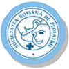

|  |
Conferinta nationala de pediatrie |
||||
| Home | Consiliu | Program | Detalii de contact | Alte informatii | |
Accente
CreditareConferinta este creditata cu 23 credite EMC conform Deciziei CMR Nr. 2052/2019. Conferinta are statut de Curs de Educatie Medicala Continua si este adresata tuturor medicilor interesati de temele conferintei, in special celor cu specializarea pediatrie si medicina de familie. Data si loculData conferinte:3-6 aprilie 2019 Loc desfasurareBucuresti, Crystal Palace Ballrooms Adresa este Calea Rahovei nr. 198A, Sector 5. Mijloace de transport: Autobuz: 117, 173, Tramvai: 23,32. SECTIUNI
|
|||||
| AndreeaSB@2019 | |||||